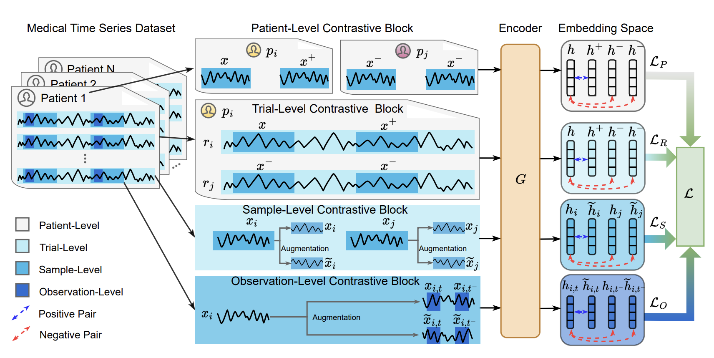
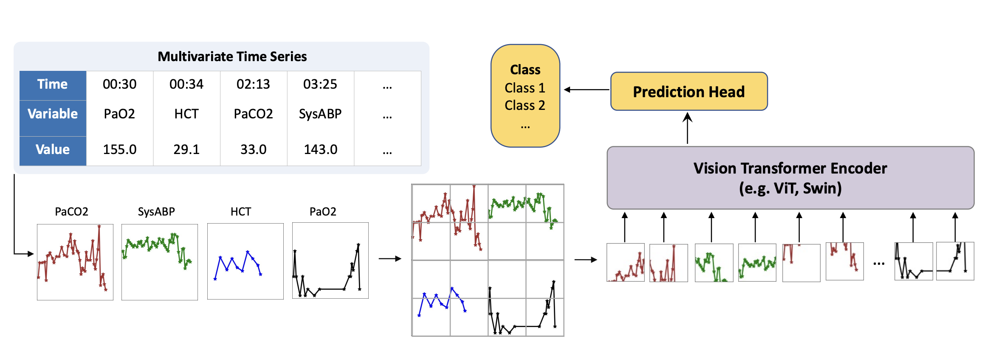
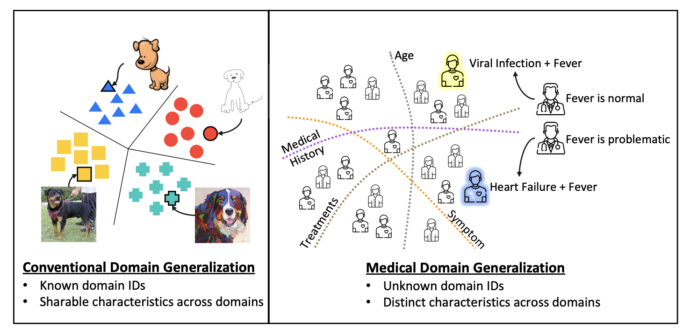
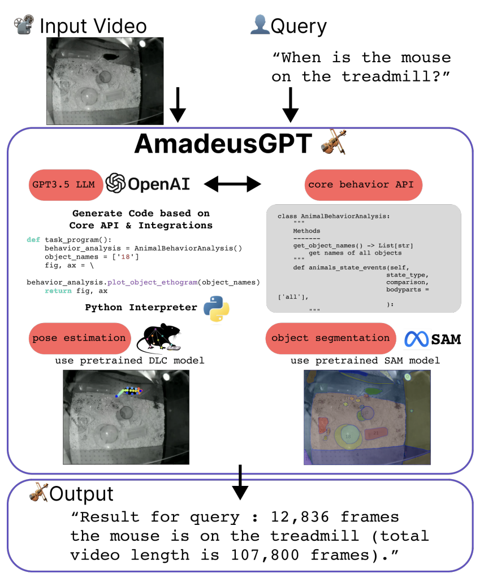

Impresiones Generales
En diciembre pasado, tuve el placer de asistir a la edición 2023 de la conferencia Neural Information Processing Systems (NeurIPS) en Nueva Orleans. Era la primera vez que asistía a un evento tan grande, y debo admitir que me sentí un poco abrumado por la cantidad de personas y la inmensa cantidad de información disponible. Sin embargo, obtuve mucha información valiosa de las varias charlas interesantes y sesiones de póster a las que logré asistir, y me gustaría compartir algunos de mis fragmentos favoritos con quien esté interesado!. Abajo un resumen de los tres artículos que encontré más interesantes para mi investigación actual, así como un bonus track sobre un proyecto increíble que me retrotrajo a mis días de doctorado.
Contrastando todo (COMET)
El primer artículo en la lista presenta COMET, un marco de aprendizaje por contraste para aprender representaciones de series temporales médicas de manera auto-supervisada. La principal contribución que los autores presentan es un esquema de entrenamiento jerárquico para codificadores de series temporales, con una función de coste que consta de cuatro niveles de contraste, con el fin de explotar y aprender de diferentes niveles de consistencia de datos que de otro modo podrían perderse. Para todos los niveles, utilizan variantes de función de coste InfoNCE (Information Noise Contrastive Estimation, en inglés), donde los pares positivos y negativos se obtienen enmascarando observaciones al azar en el input a los modelos.
Como resumen, empecemos por describir la función InfoNCE más típica. Dado un conjunto de muestras \(x_i\) y un conjunto diferente \(x_j\), la InfoNCE se define como:
$$ \mathcal{L}_{\text{InfoNCE}} = -\frac{1}{N} \sum_{i=1}^{N} \log \frac{\exp(\text{sim}(x_i, x_i^+))}{\sum_{j=1}^{K} \exp(\text{sim}(x_i, x_j^-))} $$donde \(x_i^+\) es una muestra positiva, \(x_j^-\) una muestra negativa, y \(\text{sim}\) una función de similitud (típicamente el producto escalar entre las representaciones, pero podría ser cualquier otra cosa). La idea es maximizar la similitud entre las representaciones de pares positivos, mientras se minimiza para pares negativos (¡noten el signo \(-\)!). Pero, ¿cómo definimos pares positivos y negativos? Bueno, aquí es donde COMET brilla…
Los cuatro niveles que mencioné arriba se definen de la siguiente manera:
-
Nivel de Observación: Primero, las observaciones aumentadas del mismo punto en el tiempo se tratan como pares positivos \((x_{i,t}, \tilde{x}_{i,t})\), mientras que las observaciones reales y aumentadas de diferentes puntos en el tiempo se tratan como negativas \((x_{i,t}, x_{i,-t})\) y \((x_{i,t}, \tilde{x}_{i,-t})\), donde \(x\) es una muestra dada, \(\tilde{x}\) una muestra aumentada, \(i\) el índice de muestra y \(t\) el índice temporal.
-
Nivel de Muestra: En segundo lugar, las observaciones aumentadas de la misma muestra se tratan como pares positivos \((x_{i}, \tilde{x}_{i})\), mientras que las observaciones reales y aumentadas de diferentes muestras se tratan como negativas \((x_{i}, x_{j})\) y \((x_{i}, \tilde{x}_{j})\).
-
Nivel de Ensayo: Como las series temporales pueden ser arbitrariamente largas, COMET contempla subdividir las muestras en el tiempo en pedazos (llamados trials en el paper original). En este término de la función de coste, aplicamos la misma función mencionada arriba, pero a una representación agregada de todo el trial en lugar de las representaciones de observaciones individuales. De los cuatro niveles, es el único que surge como un artefacto de las limitaciones del hardware, en lugar de las verdaderas consistencias en los datos. No está claro si esto sería necesario si el hardware no es un límite.
-
Nivel de Paciente: por último, pero no menos importante, repetimos el paso 3, pero ahora con los trials agrupados en función de si pertenecen al mismo paciente o no. Las series temporales diferentes muestreadas de los mismos individuos se consideran pares positivos, y como negativos en caso contrario.
Al entrenar el codificador con estos cuatro niveles de pérdida por contraste, los autores buscan aprender representaciones que sean invariantes a los diferentes niveles de consistencia de datos.
El flujo de trabajo principal se ve así (chequeá el artículo completo para más detalles):

Los experimentos en el paper se centran en datos de EEG (electroencefalograma) muestreados regularmente con pocos o ningún valor faltante. Sin embargo, el método parece ser un excelente punto de partida para el aprendizaje a partir de datos muestreados irregularmente (como las series temporales de UCI) también. A fin de cuentas, superaron varias líneas base de auto-supervisión de series temporales en la detección de infarto de miocardio y enfermedad de Parkinson.
Series Temporales como Imágenes: Transformer de Visión para Series Temporales Muestreadas Irregularmente
Ahora pasamos a un artículo que llamó mi atención debido al pensamiento lateral en juego. Series Temporales como Imágenes presenta una forma peculiar de procesar series temporales muestreadas irregularmente para el aprendizaje supervisado, basada en la representación de los valores recopilados como imágenes y su procesamiento utilizando un transformer de visión swin preentrenado. Los autores realizan varios experimentos poco ortodoxos sobre cómo diferentes estilos de representación afectan el rendimiento, como marcadores, interpolación, orden de las variables, y colores. Además, incluyen varios experimentos en datos de unidades de cuidados intensivos, e incluyen comparaciones directas con muchas líneas base, incluido SeFT del laboratorio Borgwardt (donde trabajo). Alcanzan un rendimiento de SOTA en varias tareas, incluida la predicción de septicemia y mortalidad en datos de los desafíos PhysioNet 2019 y 2012, respectivamente. Entrenan los modelos con una simple función de coste para clasificación binaria (entropía cruzada binaria), mientras aumentan la clase minoritaria. Curiosamente, también incluyeron información estática (edad, altura, peso, sexo, demografía) como un párrafo representado con un modelo de lenguaje solo encoder… Las representaciones de series temporales y texto se concatenaron antes de la clasificación. Verdaderamente poco ortodoxo, ¡pero parece funcionar!
El flujo de trabajo principal se ve así (de nuevo, chequeá el artículo para más detalles):

En general, este artículo demuestra claramente las capacidades de generalización de los grandes modelos de visión, pero queda por ver si sus ideas se pueden extender para hacer modelos de series temporales generalizables.
Un Marco Iterativo de Auto-Aprendizaje para la Generalización en el Dominio Médico
Finalmente, el tercer trabajo en este resumen presenta un enfoque para mitigar el cambio de distribución en datos de registros médicos electrónicos (EHR), denominado SLDG (Generalización de Dominio de Auto-Aprendizaje, por sus siglas en inglés). En resumen, el enfoque comienza agrupando las características semánticamente en diferentes clases (como estáticas, síntomas, tratamientos e historia médica). Cada subconjunto de características se representa con un codificador entrenado en un espacio latente individual, y se recupera una serie de dominios latentes para cada modalidad utilizando clustering jerárquico, con el número de clústeres seleccionado automáticamente en función del silhouette score. Esto facilita la detección de clústeres realmente específicos como la intersección de grupos no tan raros de características específicas (como un clúster de pacientes mayores de edad con antecedentes de tabaquismo y diabetes tipo 2, que se puede descomponer en mayor, masculino, fumador y diabetes tipo 2). Por último, se entrenan clasificadores individuales para una variable objetivo dada para cada una de estas clases de características, con clústeres recalculados cada 20 épocas.

Sus experimentos se centran en la predicción de readmisión a 15 días y mortalidad tanto en MIMIC-IV como en eICU, con divisiones de datos que maximizan las brechas temporales y espaciales entre las muestras, siendo la última basada en la ubicación geográfica de los hospitales. Superaron varias líneas base de generalización de dominio en todas las tareas y métricas, lo cual suena prometedor. Curiosamente, no proporcionan métricas de generalización entre eICU y MIMIC-IV; solo dentro de cada conjunto de datos individualmente.
En general, parece un enfoque inteligente para agrupar eficientemente representaciones basadas en el conocimiento previo sobre las distintas variables en juego, lo cual puede tener un impacto positivo en tareas de adaptación de dominio.
Bonus track:
AmadeusGPT: una interfaz de lenguaje natural para el análisis interactivo del comportamiento animal
Durante mi doctorado, trabajé mucho con datos de seguimiento de movimientos provenientes de experimentos con animales. El estado absoluto del arte, tanto en términos de rendimiento como de soporte al usuario, para el seguimiento de movimientos en biología, es DeepLabCut. Sin embargo, el software principal no es el más amigable para el usuario y puede ser bastante engorroso para los biólogos de laboratorio que lo usan habitualmente. Acá es donde entra en juego (¿o en canción?) AmadeusGPT. Aprovechando varios hitos del laboratorio Mathis, como DLC super animal (un modelo que permite el seguimiento de animales sin entrenamiento previo), segmentación de objetos usando SAM y llamadas API a ChatGPT, los autores (¡también el equipo de DeepLabCut!) presentan una interfaz de lenguaje natural para el análisis interactivo del comportamiento animal, donde el usuario puede hacer preguntas sobre los datos en inglés, y el sistema devuelve la información relevante.

Al momento de escribir esto, el sistema sólo está disponible previa solicitud (lo cual es comprensible, dado el costo de las llamadas API de ChatGPT a gran escala), pero parece un gran paso adelante para hacer que la tecnología de vanguardia sea más accesible al público en general. ¡Veremos cómo evoluciona este proyecto!